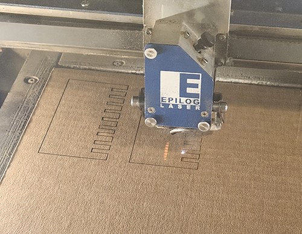
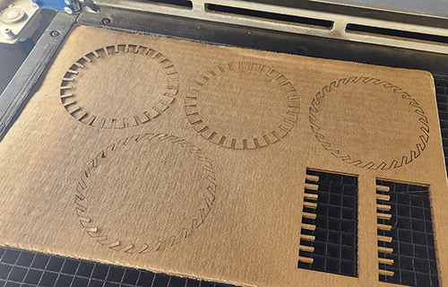

For my final project for this class, I am going to be recreating this adorable Eugy elephant on a bigger scale and out of wood with laser cutting. I adore elephants and wanted to create something that I would want to keep long after this class. My kiddos and I have been making a few of these lately and I thought having a bigger elephant out of wood would be just the perfect piece to display in my home.
Modeling: I’ll recreate the elephant pieces in Adobe Illustrator using the original pieces as a reference in
making the Illustrator file, ready to be laser cut.
Laser Cutting: I’ll be cutting out the individual pieces out of ¼” wood. This is a new material for me to work
with in laser cutting.
3D Modeling: I’ll be making the eyes of the elephant out of plaster. I’ll need to create the model of the
mold in either Fusion 360 or Rhino.
3D Printing: I’ll be creating a mold of a mold for the eye of the elephant. This will start with the 3D
print and the casing for the eye.
Casting: I’ll be making a silicone mold of the elephant’s eye. And then creating 2 eyes from the plaster
inside my newly created silicone mold.
Building: The final step will be assembling everything and putting the whole thing together.
The first issue I ran into on this project was that my cardboard was very inconsistent. I had bought sheets of cardboard from Amazon, and from the plastic packaging warping the edges of the cardboard as well as the overall squishiness of the boards, each side’s measurement of the cardboard came out different. I took measurements of all 4 sides and then averaged them to get an average thickness of 3.68mm.
After getting an average thickness of my cardboard, I created a test piece. I did cutouts from 3.5mm to 4.3mm in .1 increments. For the test cut, one of the employees in the Maker Lab helped me on the laser cutter machine with the test cut. He ended up running the show, which frustrated me as I was hoping to drive this project, and I had to keep asking what he was doing and kept telling him that I would need to know how to do this myself. He was a little TOO helpful in this process. For the test cuts, the power setting seemed to be an issue as the laser was not cutting all the way through the cardboard. We ended up doing 3 passes for the test cut and adjusted the power setting for each cut. Ultimately, the setting had to be adjusted from the recommended setting of 50 to a power setting of 65. This finally cut all the way through the cardboard.
The larger cut sizes of 4.0 and bigger were very loose and didn’t pass my shake test. The smallest 3 sizes were all acceptable sizes and passed my shake test. I ended up going with the smallest and tightest size so the finished project would really hold up under a firm shake. The pieces fit together nicely and felt snug and sturdy.
I created 2 different style pieces for my project. One was a round base and the other was a triangular side “wing” type of piece that would connect to both the top and bottom bases. I created and cut out 2 styles for the bottom/top bases. One base had straight inserts for the winged cutouts. While the other base piece was also a round base, but had angled inserts for the wings. I cut out both styles and tested both base types. I preferred the look of the straight cuts versus the angled cuts.
Next, I cut out the “wings” or side pieces to the project. These were the walls that held the finished piece sturdy. I used 2 sheets of cardboard to cut out a total of 32 wings and used 30 on the final project.
In total I cut out 32 pieces for this project. 2 are the round bases, and then 30 of the same repeated pieces that are
used to make up the walls/wings of the structure.
My settings for the cuts were:
Speed: 20%
Power: 65%
Frequency: 50